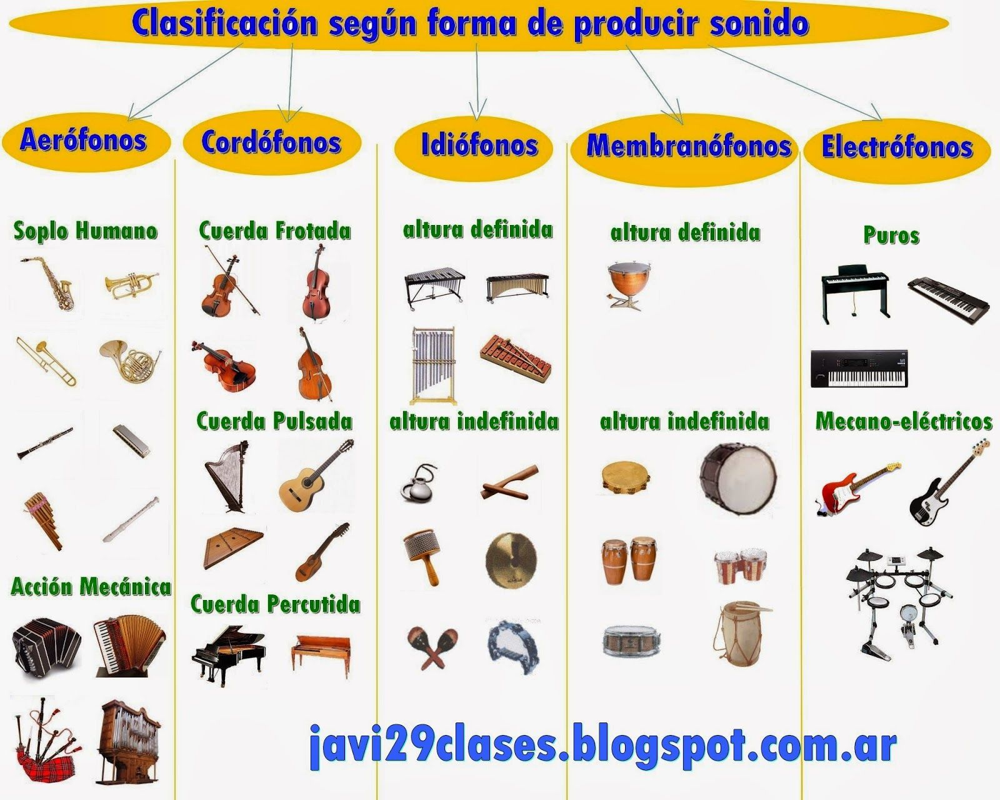

Clasificación de Instrumentos Musicales
Erich von Hornbostel y Curt Sachs publicaron en 1914 una clasificación de los instrumentos musicales en su trabajo Zeitschrift für Ethnologie que es ampliamente seguida en la actualidad.
Establecieron cuatro clases o categorías principales de instrumentos musicales (a la que añadieron una quinta posteriormente), que a su vez se dividen en grupos y subgrupos, según el modo de generación del sonido:
Idiófonos.
Son aquellos instrumentos en los que el sonido procede de un cuerpo sólido y es generado por vibración del instrumento mismo mediante percusión, frotación o pulsación, como en el caso de las claves, xilófono, campana.
Membranófonos.
Los membranófonos son aquellos en los cuales el sonido es generado por la vibración de una membrana por percusión o frotación, como es el caso del timbal, tambor, conga.
Aerófonos.
Son los llamados instrumentos de viento, donde el sonido es generado por la vibración del aire, a causa del roce con una lengüeta, labios o cuerdas vocales.
En función a cómo se produce el sonido podemos clasificarlo en dos tipos:
En viento madera el instrumento produce el sonido mientras que en viento mental, la persona que lo toca .
En viento madera podemos clasificar los instrumentos según su embocadura:
- Bisel:destacan instrumentos como la flauta dulce y la flauta travesera.
- Lengüeta simple: como por ejemplo el clarinete y el saxofón
- Lengüeta doble: entre los que se encuentran el oboe y el fagot
Cordófonos.
Los cordófonos o también conocidos como instrumentos de cuerda, son aquellos que producen el sonido mediante la vibración de cuerdas tensadas. Estos instrumentos tienen además una caja de resonancia para amplificar el sonido. En base a la forma en la que obtenemos el sonido podemos dividirlo en tres tipos diferentes : frotada, pulsada y percutida.
- Cuerda frotada: Se caracteriza por obtener el sonido al frotar las cuerdas con un arco. En este grupo destacan instrumentos como el violín, la viola, el violonchelo y el contrabajo.
- Cuerda pulsada: Se caracteriza por obtener el sonido al pulsar las cuerdas con los dedos o con púas. Como ejemplo de este grupo tenemos el arpa y la guitarra.
- Cuerda percutida: En este grupo destacamos el piano que obtiene el sonido golpeando las cuerdas.
Electrófonos
Durante el siglo XX se desarrolló un nuevo tipo de instrumento, los denominados electrófonos. En estos instrumentos, el sonido es generado por medios electrónicos, como en el sintetizador o el theremín. No deben ser confundidos con los instrumentos electroacústicos, donde el sonido es generado de modo no electrónico pero modificado electrónicamente, como en el caso de la guitarra eléctrica y el bajo eléctrico. Sachs, por esta razón, más tarde añadió una quinta categoría a su clasificación, los electrófonos.
